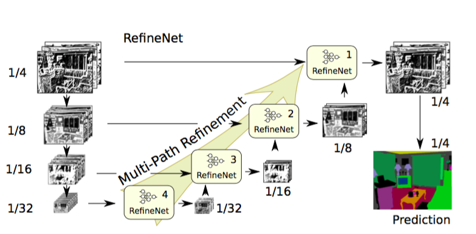

Semantic Segmentation¶
预测分割图的大小是图像大小的1/8.几乎所有的方法都存在这个现象,通常使用插值的方法获取最终分割图.
下列论文按照时间顺序进行介绍:
- FCN
- Dilated Convolutions
- DeepLab (v1 & v2)
- RefineNet
- PSPNet
- DeepLab v3
FCN¶
这是一项重要的贡献,但是当前的技术水平又有了很大发展.
使用VOC2012评估服务器进行基准测试,基准测试分数(62.2,67.2).
Dilated Convolutions¶

池化使感受野增大,因此对分类网络有所帮助.但池化会造成分辨率下降,不是语义分割的最佳方法.因此,论文作者使用空洞卷积层.空洞卷积层(将其称为带孔卷积)可使感受野呈指数级增长,而空间维度不至于下降.
主要贡献:
- 使用空洞卷积,一种可进行稠密预测的卷积层
使用VOC2012评估服务器进行基准测试,基准测试分数(71.3,75.3).
DeepLab (v1 & v2)¶
使用深度卷积网络和全连接CRF进行图像语义分割.
主要贡献:
- v1:使用深度卷积网络和全连接CRF进行图像语义分割
- v2:使用深度卷积网络,带孔卷积和全连接CRF进行图像语义分割
使用VOC2012评估服务器进行基准测试,基准测试分数(79.7,).
RefineNet¶

使用空洞/带孔卷积的方法也有弊端.由于空洞卷积需要大量高分辨率特征图,因此其计算成本高昂,且占用大量内存.这妨碍了高分辨率预测的计算.例如,DeepLab的预测结果大小是原始输入图像的1/8.
因此,这篇论文提出使用编码器-解码器结构.编码器是ResNet-101模块,解码器是RefineNet模块,该模块融合了编码器中的高分辨率特征和先前RefineNet模块中的低分辨率特征.
使用VOC2012评估服务器进行基准测试,基准测试分数(84.2,).
PSPNet¶
金字塔型场景解析网络.
主要贡献:
- 提出金字塔池化模块帮助实现背景聚合
- 使用辅助损失
使用VOC2012评估服务器进行基准测试,基准测试分数(85.4,).
DeepLab v3¶
与DeepLab v2和空洞卷积论文一样,该研究也使用空洞/扩张卷积来改进ResNet模型.改进后的ASPP包括图像层级特征连接/一个1x1的卷积和三个3x3的不同比率空洞卷积.每一个并行卷积层之后使用批量归一化操作.
主要贡献:
- 改进了金字塔型的空洞池化
- 模型级联了多个空洞卷积
使用VOC2012评估服务器进行基准测试,基准测试分数(85.7,).